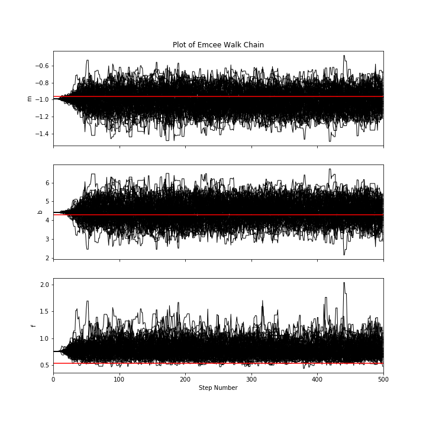

Example: Fitting a Model to Data
emcee is an extensible, pure-Python implementation of Goodman & Weare's Affine Invariant Markov chain Monte Carlo (MCMC) Ensemble sampler. It's designed for Bayesian parameter estimation and it's really sweet!

If you’re reading this right now then you’re probably interested in using emcee to fit a model to some noisy data. On this page, I’ll demonstrate how you might do this in the simplest non-trivial model that I could think of: fitting a line to data when you don’t believe the error bars on your data. The interested reader should check out Hogg, Bovy & Lang (2010) for a much more complete discussion of how to fit a line to data in The Real World™ and why MCMC might come in handy.
When you approach a new problem, the first step is generally to write down the likelihood function (the probability of a dataset given the model parameters). This is equivalent to describing the generative procedure for the data. In this case, we’re going to consider a linear model where the quoted uncertainties are underestimated by a constant fractional amount. You can generate a synthetic dataset from this model.
It is necessary that you write down priors if you’re going to use MCMC because all that MCMC does is draw samples from a probability distribution and you want that to be a probability distribution for your parameters. This is important: you cannot draw parameter samples from your likelihood function. This is because a likelihood function is a probability distribution over datasets so, conditioned on model parameters, you can draw representative datasets (as demonstrated at the beginning of this exercise) but you cannot draw parameter samples.